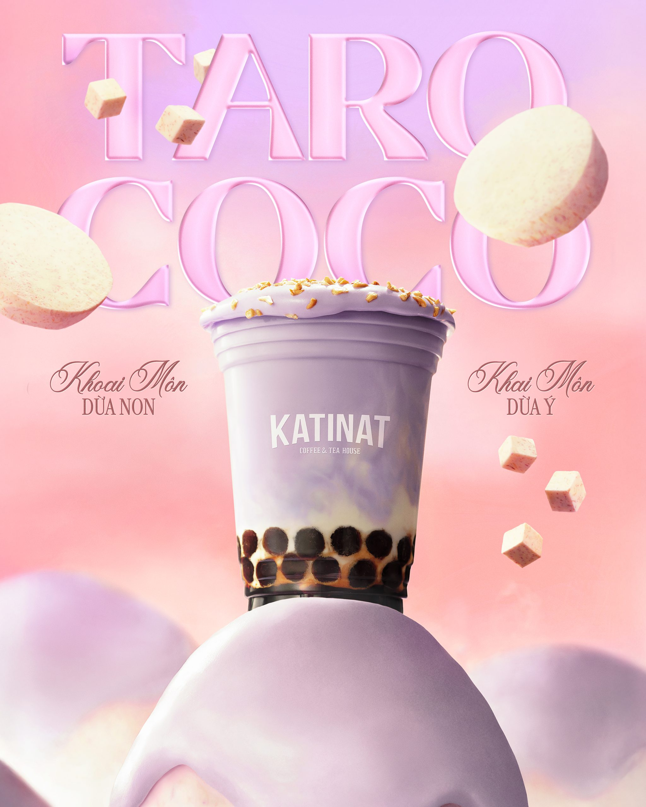
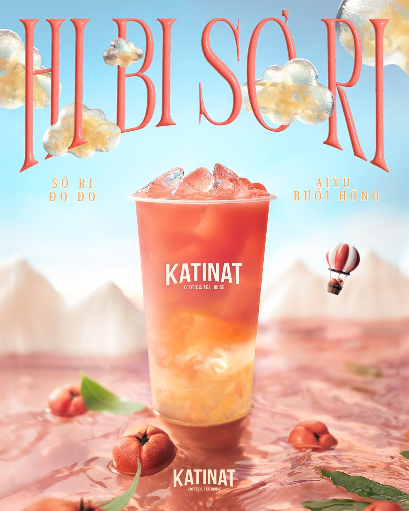
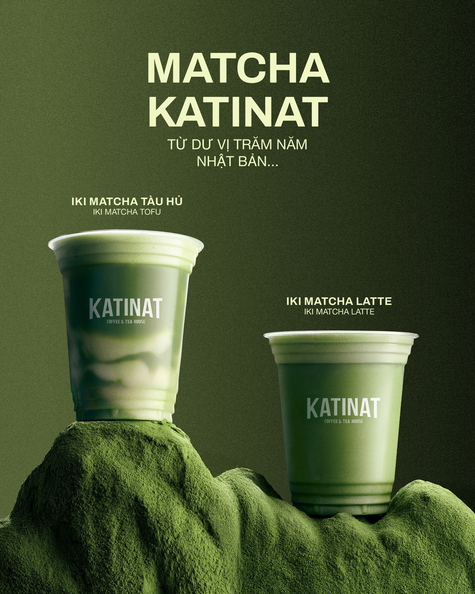

|
KATINAT
KATINAT Coffee & Tea House – HÀNH TRÌNH CHINH PHỤC PHONG VỊ MỚI Xem thêm... |
NỔI BẬT

TARO COCO
|

HIBI SƠ RI – THÊM CHÚT “ĐỎ” CHO MÙA LỄ HỘI...Tận hưởng mùa Giáng Sinh khác biệt tại KATINAT cùng “làn gió mới” Hibi Sơ Ri – một sự kết hợp hoàn hảo giữa vị chua thanh mát từ Trà Hibiscus cùng vị Sơ Ri chín mọng tận tay chọn lọc bởi nghệ nhân, quyện chút thanh... Xem thêm |

Iki Matcha Tàu Hủ - Iki Matcha Latte...
Sự ngọt dịu, thanh thoát của Matcha hòa quyện cùng lớp Tàu Hủ mịn mượt, mát lành mang đến trải nghiệ.... Xem thêm |